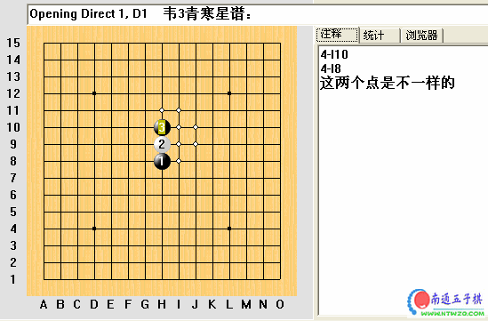

韦3青寒星谱
首页
定式及研究
#1 韦3青寒星谱 作者：有志青年 发表时间：2006-8-11 8:44:33

棋谱下载：
 寒星谱.rar
寒星谱.rar
#2 Re:韦3青寒星谱 作者：news 发表时间：2006-8-25 14:25:31
支持下。
楼主和作者都辛苦了
#3 Re:韦3青寒星谱 作者：连珠战神 发表时间：2007-2-3 16:26:10
看看
#4 Re:韦3青寒星谱 作者：其实不是我 发表时间：2007-2-3 19:54:51
学习
#5 Re:Re:韦3青 作者：贵族棋群 发表时间：2007-3-29 9:19:15
寒星谱好用，楼主辛苦了